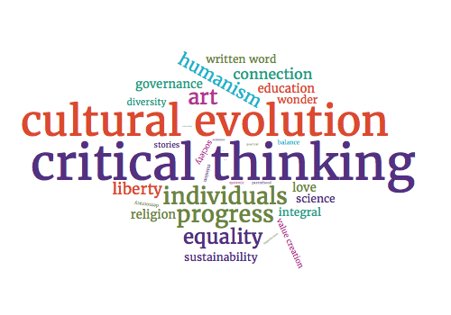

The Society for Practical Utopians
Working together to shape a brighter future for humanity
A Compact, Extensible, Open-Source Belief System for the 21st Century
By Herb Bowie
2017 Mar 26
It often seems that there is little in this modern world that any two of us can agree on.
In many areas, that’s perfectly OK, and to be expected. Our world offers us many choices, whether we’re considering food, music, literature, careers, clothing, hair styles, or tattoos. To each his or her own, as we say. Vive la différence!
And yet, there are certainly some areas where we need to find common ground. In order to live and work and play together, we need some common set of beliefs about how the world works, and about what is most important to us. Without these two sets of convictions – let us call them principles and values – it can be difficult or even impossible for us to engage with each other in any productive way.
So what choices do we have?
Traditional religions offer us one sort of answer. But in a world of diverse faiths – and including those who may politely refuse to believe in any sort of god – these seem ill-suited to helping us find common ground.
Negative beliefs offer another sort of answer. But whether we are atheists defining ourselves by our lack of belief in God, or Republicans defining ourselves by our lack of belief in Obamacare, these sorts of anti-belief systems ultimately tend to prove unsatisfying as well: they seem to cease providing helpful answers just when we need them the most, and they serve to perpetuate divisiveness, rather than helping us find beliefs we can share.
Another sort of answer is to try to find sympatico souls with whom we feel some sense of communion, and then assume we share some common set of loosely defined beliefs. This seems to work well, until you find yourself diverging from others in the fold over some article of faith you had tacitly assumed you were in agreement on, right up to the moment you discovered you were in violent and irreconcilable disagreement. (I’ve personally had this experience with both Democrats and Immortalists.)
So where does this leave us? Nowhere good, I concluded some little while ago.
And so, I decided, it was high time for me to write down my own belief system, and share it with others.
This started as a personal challenge for myself. I knew damned well what I didn’t believe in. But could I write down a simple, short list of things I did believe in? In language that would be accessible to others? Not as some idiosyncratic set of personal likes and dislikes, but as something I could fairly ask others to sign up to as well?
This was a harder task than I had originally imagined, but I eventually arrived at a couple of short simple lists that seem to consistently describe my most basic beliefs. I’ve lived with them for a while now, and tweaked them a bit, and feel like they’re now about as good as I can make them.
So now comes the next step. And here’s where you come in.
I invite you to consider the following set of beliefs, and let me know what you can agree with, as well as anything critical you find to be missing or mistaken. I’m calling this a belief system for Practical Utopians, or Practopians, for short.
I look forward to you feedback. Send me a note at hb@practopians.org, or post your reactions and comments on the Practopians Facebook Page.
Mission
We Practical Utopians seek to identify and promote beliefs, principles, values and actions that will result in a brighter future for humanity.
Principles
Our principles identify our most fundamental beliefs about the world and our place in it.
-
We are humanistic: we are focused on human concerns and human potential.
-
We strive to integrate multiple diverse human perspectives in order to arrive at a more perfect understanding of the truth.
-
We embrace science as one way of understanding the universe in which we live, and we accept toolmaking (aka engineering) as one means of improving the human condition.
-
We believe in evolution as an ongoing force in the world, and in particular are interested in the continuing evolution of humanity.
-
We are especially focused on cultural evolution, since what it means to be human is so intertwined with our cultural identity.
-
We believe in the importance of the written word, including many works of philosophy and literature, but place no faith in any single text that we deem to be sacred.
-
We believe that we humans create meaning for ourselves through storytelling, that this fundamental human trait becomes manifest in all forms of artistic expression, and that the resulting works of art are important elements of our culture.
-
We harbor no romantic notions about the perfectibility of humans or of human society: we are satisfied with progress, and do not demand perfection.
-
We believe that ordinary individuals have the power to shape our cultural evolution and influence our human condition in ways both positive and negative; our goal is to help all of us make broader, better informed, more deeply felt, more conscious decisions that will help us advance towards a more positive future.
-
We believe that we can produce better outcomes for humanity through the application of critical thinking and the use of the scientific method.
-
In order to achieve positive outcomes from the complex social, economic, and ecological systems in which we live, we believe we must think systemically – rather than simply focusing on the individual actors within these systems – and need to identify root causes and take actions at that level.
-
We experience a sense of wonder in our approach to the world as we encounter the mysterious, the unexpected, the unfamiliar and the unexplained.
-
Although we cannot define the meaning of the word in any comprehensive way – or, perhaps, because we cannot fully define it – we believe in love.
Let us call love the apprehension of something outside of oneself, some being or form that is other than our self, and yet that affirms the possibility of a greater unity of which we are each but parts, a unity that leaves us still ourselves, and yet also part of something inestimably greater.
This sensation of love may be felt in the presence of another person, or a group of people, or a work of art, or another living creature, or some element of the natural world, or in the embrace of the entire world around us.
We want to help shape a world in which there is more of this stuff: more love.
Values
These are the things we value most.
-
Balance: We believe in striving for balance between competing concerns. Although all of the values on this list are important to us, we have no desire to establish any one of them as fundamentally absolute.
-
Liberty: We believe in allowing individuals as much autonomy as practical, so long as they do not infringe on the life and liberty of others, either directly and individually, or indirectly and communally.
-
Society: We value the social fabric that binds us together as part of a shared human community, and believe in the need to establish institutions of governance for society.
-
Connection: A feeling of caring connection to others is part of what makes us human, and is the central force that makes each one of us part of something larger than our individual selves.
-
The Rule of Law: Every society should establish rules to govern human interaction, to channel human energy along constructive paths, and to promote useful order; these rules should be constructed in accordance with Practopian principles and values; it is the duty of citizens of a society to obey such rules.
-
Equality: All citizens must be treated equally before the law, without discrimination based on appearance, gender, ethnic origin, race or sexual orientation.
-
Democracy: All citizens should have an equal say in defining their society’s laws, and equal ability to influence the operation of society’s institutions of governance.
-
Parenthood: Parents have an obligation to help their children become healthy, happy adults who make their own positive contributions to society.
-
Education: It is in the best interests of society to assist in the education of its members.
-
Private and Public Property: We believe in the private ownership of most property, but also in the public ownership of property that can benefit society at large through shared usage.
-
Proportional Rewards for Value Creation: It is in the best interests of society to encourage its citizens to engage in activities that will create value for themselves and others and society at large, and to allocate capital so that the greatest amount of it is available for use by those with the strongest likelihood of using it wisely.
-
Diversity: We believe in the diverse expression of human potential.
Summary
And there you have it: as promised, a belief system that is:
-
Compact – consisting of only 26 short items;
-
Extensible – not meant to be a complete set of passions and beliefs, but just a common starting point;
-
Open-Source – content available to all interested parties on GitHub, free to share, and open for collaborative review and improvement;
-
Modern – embraces the best from the past, but in a way that makes it relevant today.
So what do you think? I’m looking forward to your feedback. Send me a note at hb@practopians.org, or post your reactions and comments on the Practopians Facebook Page.
Tags
 Content at Practopians.org is Copyright © 2009 - 2018 by Herb Bowie except where otherwise noted
Content at Practopians.org is Copyright © 2009 - 2018 by Herb Bowie except where otherwise noted